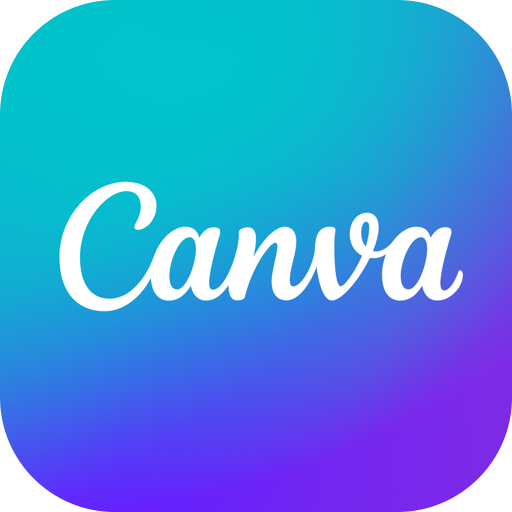

Réunion de rentrée · 19 août 2026
Point sur la rentrée &Intelligence artificielle
Certification Apple Teacher
Merci aux enseignants certifiés
178enseignants certifiés
Obtentions par mois, d’août à juillet
- 38A
- 6S
- 6O
- 7N
- 8D
- 16J
- 8F
- 12M
- 27A
- 6M
- 24J
- 11J
Journées pédagogiques
Quatre rendez-vous, quinze ateliers
IA à l’école : reprendre le contrôle sans rater le virage
Quatre ateliers · 1 h
Learning design
Quatre ateliers · 1 h
Expertise collective
Trois ateliers · 1 h
Gemini (mini hackathon)
Quatre ateliers · 1 h 30
Année 2026–2027
Le calendrier
août 2026 – juin 2027
- Événement thématique1 · 4 j
- Réunion Key users18
- Café pédagogique5
- Formation8
- Formation / certification3*
- Lecture / recherche3
- Communication16
- Réunion3
- Partage de pratiques3*
- Institutionnel1 · 7 j
- Partenariat1*
- Atelier2
- * au mois près
Un contexte en mouvement
Précautions
Trois priorités
Nos objectifs de l’année
Conformer nos usages
LPD · RGPD · RIA
Clarifier les usages
Autorisé · interdit
Former toute l’année
Dès les journées pédagogiques
La pierre angulaire
Un cadre législatif
Documents de référence
Le règlement précise
En substance
Les outils
Lesquels — et pourquoi
Les données personnelles
Ce qui est permis ou interdit
Les usages
Bulletins, correction de copies…
Exemple
La correction des copies
Un choix institutionnel
Quels outils d’IA ?

Gemini & NotebookLM
Google Workspace

Canva for Education
Règle commune
Toujours utiliser ses identifiants FlorimontBesoin non couvert
Demande écrite au COPILLicence Claude possible
Concrètement que faire avec ces IA ?
La scénarisation pédagogique
Les dispositifs
- Le plan
- La progression
- Le curriculum
Les contenus
- Les exercices
- Les activités
- Les évaluations
Scénarisation de l’enseignement
Le Learning Designer
« Que doit faire un élève pour apprendre quelque chose ? »
Changer de focale
Learning Designer + IA = un collègue virtuel
Un enrichissement pédagogique
Ai-je prévu des activités pour les élèves…
Il n’est rien qu’une IA ne puisse faire
Produire le contenu nécessaire
Mots croisés
Éclipse solaire
Exercice audio
De l’usage individuel au commun
Concevoir pour transmettre
« Prépare un fichier qui explique le déroulement de la séance. »
Avec le Learning Designer
Un format qui circulePortable
Données faciles à exporter
Standardisé
Analyse facilitée
Partageable
Reprise et adaptation
Sobre
Texte plus léger qu’un PDF ou un PowerPoint
Bilan 2025–2026
Synthèse des usages à l’institut
(pièce jointe fournie)
L'élève est d'abord producteur de contenus. Les trois usages dominants sont la création de présentations orales (24 projets), la production de vidéos (21) et de podcasts ou enregistrements audio (19). Le numérique sert avant tout à faire créer, expliquer et présenter, plutôt qu'à consommer.
Le tableur est l'outil scientifique de référence. Excel et Numbers (19 projets) sont massivement utilisés en Sciences et en Mathématiques pour traiter des données de TP et tracer des graphiques — c'est le scénario le plus reproduit d'une classe à l'autre.
Microsoft 365 est la colonne vertébrale. Teams, OneNote, Forms et SharePoint (21 projets) structurent la distribution des consignes, la remise des travaux et la collaboration, souvent depuis l'iPad (cité dans 19 projets).
Des usages spécialisés par discipline. Python et la programmation en Mathématiques (7 projets), GeoGebra et Desmos pour la géométrie dynamique (6), Procreate en Art (4), les simulations et la réalité augmentée en Sciences (9).
L'IA reste émergente. Seuls 3 projets mobilisent explicitement l'IA (ChatGPT, NotebookLM) — un axe de développement possible pour l'année. De même, 70 % des projets en sont au scénario 1 : la marge de progression vers les scénarios 2 et 3 est le principal levier d'approfondissement.
Outils et pratiques les plus cités
Nombre de projets mentionnant chaque famille d'outils (un projet peut en combiner plusieurs).